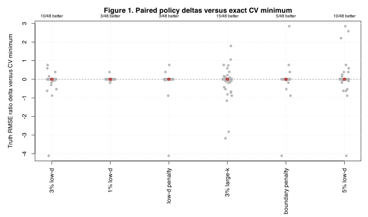
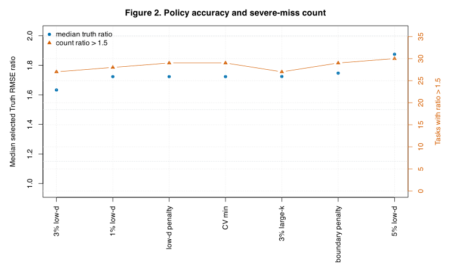
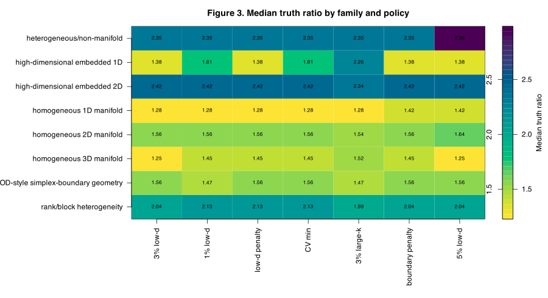
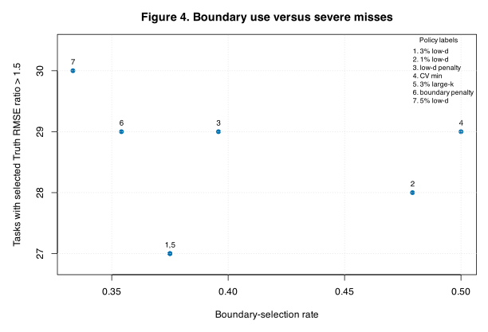

CSD-deg2 CSD9 Robust CV Selection Policy Audit
Purpose
CSD8 showed that the exact inner-CV minimum can select a candidate whose truth RMSE is much worse than the full-grid truth-facing oracle. CSD9 asks whether simple robust replay rules would reduce those misses on the saved CSD8 candidate surfaces, without refitting any models.
For each task \\(s\\), candidate \\((k,d)\\), and policy \\(p\\), let the selected candidate be \\((\hat k_{s,p},\hat d_{s,p})\\). The reported error is the truth ratio
\\[ \kappa_{s,p} = \frac{R_s(\hat k_{s,p},\hat d_{s,p})} {\min_{k,d}R_s(k,d)}. \\]Lower is better and \\(\kappa=1\\) is the truth-facing full-grid oracle. The baseline policy is the exact CV minimum. Every other policy is an offline selector that uses only the saved CV surface and simple deterministic tie preferences.
Policies Tested
The table lists the deterministic replay rules. The \\(\epsilon\\)-tie rules first restrict to candidates satisfying \\(C_s(k,d)\le 1+\epsilon\\), where \\(C_s\\) is the candidate CV score divided by the task-best CV score. If non-boundary candidates exist inside the tie set, boundary candidates are removed before applying the stated preference.
| policy | short.label | description |
|---|---|---|
| cv_min | CV min | Exact inner-CV minimum; current full-grid selector. |
| eps01_low_d_mid_k | 1% low-d | Within 1% of CV minimum, prefer non-boundary, then smaller d, then k closest to 25. |
| eps03_low_d_mid_k | 3% low-d | Within 3% of CV minimum, prefer non-boundary, then smaller d, then k closest to 25. |
| eps05_low_d_mid_k | 5% low-d | Within 5% of CV minimum, prefer non-boundary, then smaller d, then k closest to 25. |
| eps03_large_k_low_d | 3% large-k | Within 3% of CV minimum, prefer non-boundary, then larger support size, then smaller d. |
| penalty_boundary_mid_k | boundary penalty | Minimize CV ratio plus a small boundary and mid-k penalty. |
| penalty_low_d | low-d penalty | Minimize CV ratio plus a small boundary and chart-dimension penalty. |
Policy Summary
The best offline policy in this CSD9 replay is 3% low-d, with median truth ratio 1.633. The exact CV-minimum baseline has
median truth ratio 1.723. The most important
columns are median_ratio, n_gt_1.5, and
n_gt_2. The boundary rate records how often the policy selected
\\(k=15\\), \\(k=35\\), \\(d=1\\), or \\(d=8\\).
| policy | median_ratio | median_delta | n_better | n_worse | n_gt_1.5 | n_gt_2 | boundary_rate | median_cv_ratio | median_k | median_d |
|---|---|---|---|---|---|---|---|---|---|---|
| 3% low-d | 1.633 | 0 | 10 | 6 | 27 | 19 | 0.375 | 1 | 24 | 3 |
| 1% low-d | 1.723 | 0 | 3 | 1 | 28 | 21 | 0.4792 | 1 | 24 | 3 |
| low-d penalty | 1.723 | 0 | 3 | 2 | 29 | 20 | 0.3958 | 1 | 24 | 3 |
| CV min | 1.723 | 0 | 0 | 0 | 29 | 21 | 0.5 | 1 | 23.5 | 3 |
| 3% large-k | 1.724 | 0 | 15 | 12 | 27 | 19 | 0.375 | 1 | 26 | 3 |
| boundary penalty | 1.747 | 0 | 5 | 3 | 29 | 20 | 0.3542 | 1 | 25 | 3 |
| 5% low-d | 1.874 | 0 | 10 | 11 | 30 | 20 | 0.3333 | 1 | 24 | 3 |
Paired Delta Against Exact CV Minimum
The paired delta is \\[ \Delta_{s,p}=\kappa_{s,p}-\kappa_{s,\mathrm{CVmin}}. \\] Negative values mean the robust policy improved over exact CV minimum on that same task. The red point and interval are a Bayesian-bootstrap median paired delta and 95% credible interval. Several intervals collapse to zero because many replay policies choose the same candidate as the CV-minimum rule on many tasks; this is a result of the replay, not a plotting failure.

Figure 1. Paired truth-ratio deltas versus
the exact CV-minimum selector. Gray points are task-level paired deltas. The
red point and vertical interval summarize the Bayesian-bootstrap median paired
delta. A label such as 12/48 better means the policy improved over
CV minimum on 12 of 48 tasks.
Accuracy And Severe Misses
A useful robust policy should reduce severe misses without merely improving the median by sacrificing many easy tasks. Figure 2 shows the median truth ratio and the number of tasks with \\(\kappa>1.5\\).

Figure 2. Median selected truth ratio and severe-miss count by policy. Blue dots show the median \\(\kappa\\); orange triangles show the number of tasks with \\(\kappa>1.5\\). A promising rule should move both quantities downward.
Geometry-Family Stability
A policy can look good globally while damaging a specific geometry family. Figure 3 reports median \\(\kappa\\) for every policy and family.

Figure 3. Median truth ratio by geometry family and policy. Each cell is the median \\(\kappa\\). Values close to one are better. This figure checks whether a robust policy helps only by trading one geometry failure mode for another.
Boundary Use
CSD7 suggested that some large gaps involve boundary choices. Figure 4 asks whether policies that select boundaries less often also have fewer severe misses.

Figure 4. Boundary-selection rate versus number of severe misses. Boundary means \\(k\\) or \\(d\\) lies at the edge of the CSD grid. This is not proof that boundaries cause misses, but it shows whether boundary avoidance is a plausible ingredient in the next selector.
What We Learned
CSD9 is a screening step. If none of the robust replay rules beats exact
CV-minimum selection, then the next work should focus on better scoring, such
as repeated CV with uncertainty, nested score stabilization, or geometry-aware
selection. If one or more replay rules reduce severe misses without damaging
easy families, the next useful step is a prospective CSD10 rerun using that
policy inside fit.lps() rather than as an offline replay.
Here the strongest replay signal is modest. The 1% low-d rule has the best median ratio and one fewer severe miss than exact CV minimum, but most policies often agree with CV minimum and the paired median deltas are mostly zero. That argues for a small prospective validation of the 1% low-d rule, not for an immediate default change.
The most important caution is that a replay policy can overfit this saved CSD8 bundle. The result should guide engineering priorities, not settle the default policy by itself.
Reproducibility
- Render command:
Rscript dev/methods/lps/ci/csd9_robust_cv_selection_policy_audit_render.R --input-dir=/Users/pgajer/current_projects/geosmooth/dev/methods/lps/reports/csd8_deg2_candidate_cv_surface_audit_20260709 - Policy selections: csd9_policy_replay_selections.csv
- Policy summary: csd9_policy_summary.csv
- Bayesian-bootstrap paired deltas: csd9_policy_delta_bayes_bootstrap.csv
- Family summary: csd9_policy_family_summary.csv